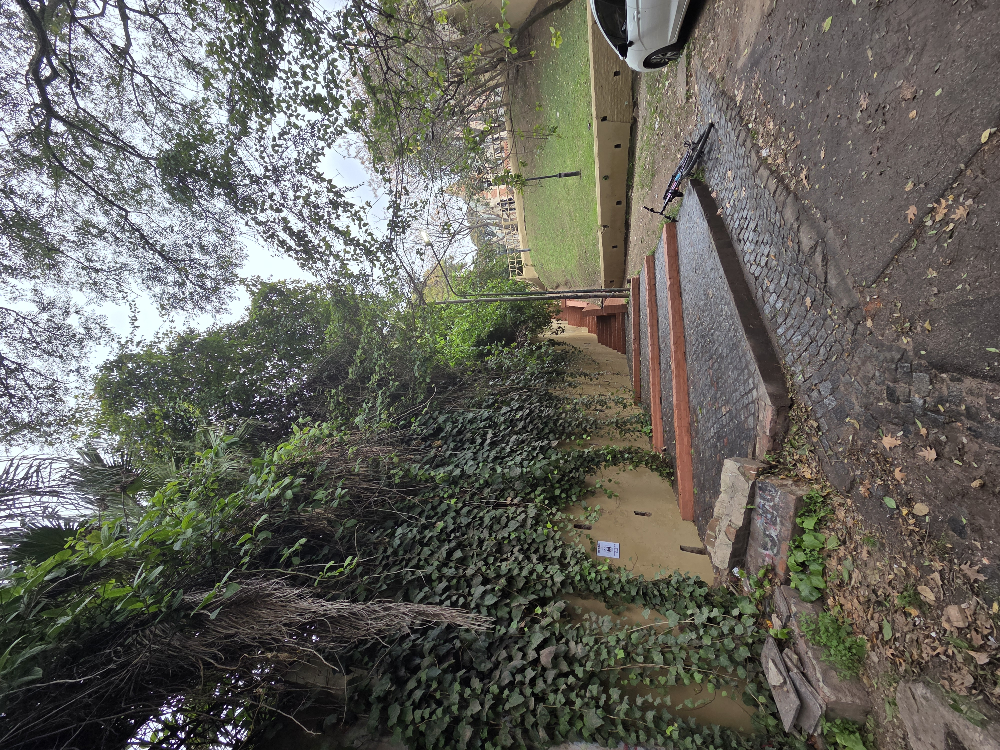

autoretrato?
que - memes, tiempo en pantalla, scrolleo como - llevando lo digital al mundo físico. imprimiendo en papel, tejiendo, haciendo grafiti. porque - para preservar el mundo digital en el mundo fisico. hacer de cuenta como que los memes son archivos de tanto valor como cualquier otro documento historico. intentar hacer un catalogamiento, una clasificacion de estos memes como si fuera documentos historicos. contestar (aunque sea ficcion): quien lo hizo/publico en que plataforma en que año